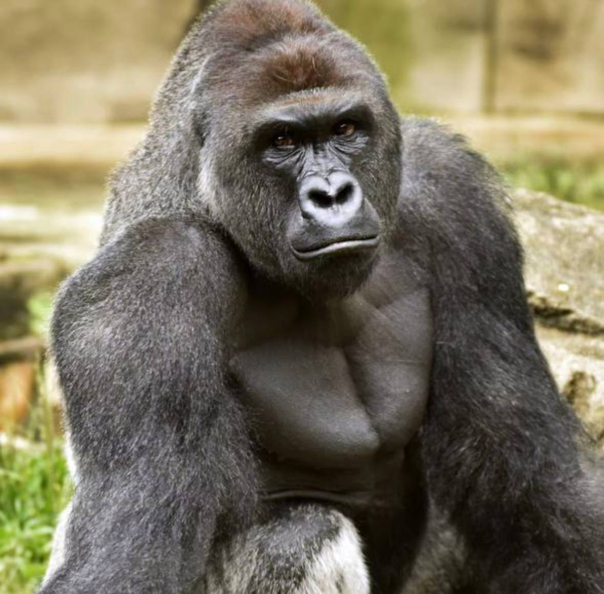
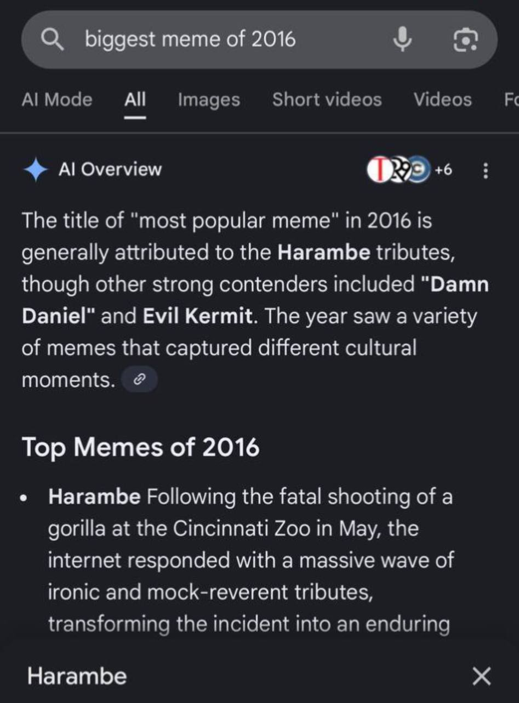

In 2016, the internet experienced a cultural moment that nobody could have predicted. Harambe went from a news story to the most recognizable, referenced, and unstoppable meme of the entire year.
The phrase "the timeline broke" became inseparable from Harambe. From social media, to gaming, to politics, to everyday internet culture — his name was everywhere.
Other memes came and went. Harambe never left. That’s what makes him the most iconic meme of 2016.
The Internet Never Forgot
Even today, a simple search proves it — Harambe wasn’t just a meme. He was the meme.

Proof: Harambe was the most viral meme of 2016.
Status
Immortal Internet Legend